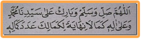

Allahumma sholli wasallim wabaarik 'alaa sayyidinaa Muhammadin wa'alaa aalihii kamaalaa nihaayata lika maalika 'adada kamaalihi.
Artinya:
Ya Allah limpahkanlah rahmat keselamatan dan berkah kepada junjungan kami Nabi Muhammad dan kepada keluarganya sebagaimana tiada batas akhir bagi kesempurnaanMu, sebanyak hitungan kesempurnaanNya.
Manfaat dan fadhilah sholawat ini adalah :
Apabila dibaca satu kali pahalanya sama dengan membaca sholawat 10.000 (sepuluh ribu) kali, apabila dibaca 700 (tujuh ratus) kali dapat menjadi tebusan bebas dari api neraka.
Barang siapa yang selalu rutin membaca sholawat kamaliyah 70 kali di waktu antara shalat magrib dan isya', Allah SWT akan memberikan kekuatan dalam hal hafalan / hafalannya kuat , tidak mudah lupa.
Wallahu A’lam